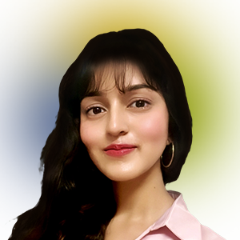
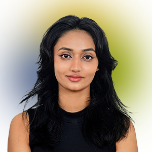
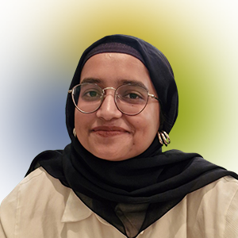
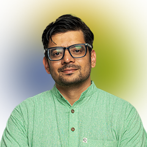
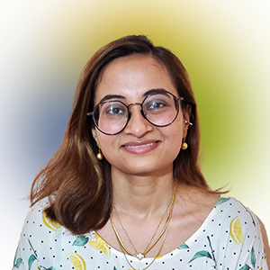
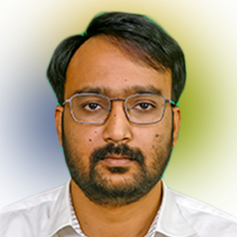
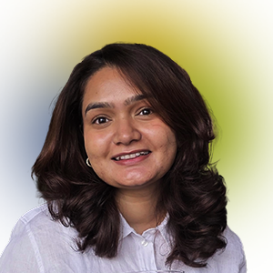

Meet our Fellows
2025

Rylaa Singh Navraj
BA (Political Science), Lady Shri Ram College For Women (LSR)

Tushar Rajput
LLM (International Law), The Fletcher School of Law and Diplomacy

Jaya Sengar
MSc (Modern South Asian Studies), University of Oxford

Vivan Mukherjee
BA (Political Science), Hindu College

Rimsha Khan
MA (Political Science), Lady Shri Ram College For Women (LSR)
Prachi Bhuckal
MA (Political Science), Lady Shri Ram College For Women (LSR)
Shubham Airi
LLM (Dispute Resolution), Jindal Global Law School
Shivangi Singh
Integrated Dual Degree (Civil Engineering and Biology), BITS Pilani

Abhishek Pisharody
MA (Development Studies), Azim Premji University

Faiz Ashraf
MA (Political Science), Jamia Millia Islamia

Mansi Thakare
MA (International Electoral Management and Democracy Practices), Tata Institute of Social Sciences (TISS), and MBA (Social Entrepreneurship), NMIMS

Talha Malik
PGD (Journalism), Indian Institute of Mass Communication (IIMC)

Atul Ranjan
PGD (Journalism), Asian College of Journalism

Nishat Qasmi
MA (Philosophy), University Of Delhi

Saurabh Pachpute
BE (Mechanical Engineering), Savitribai Phule Pune University

Zulfikar Ahmed
MA (International Relations), Jadavpur University

Siddharth
MA (History), Jawaharlal Nehru University (JNU)

Parul Harbansh
MA (Sociology), Jawaharlal Nehru University (JNU)
Animesh Shrivastava
MA (Applied Economics), Jawaharlal Nehru University (JNU)
Madhav Chadha
MA (Economics), Ashoka University